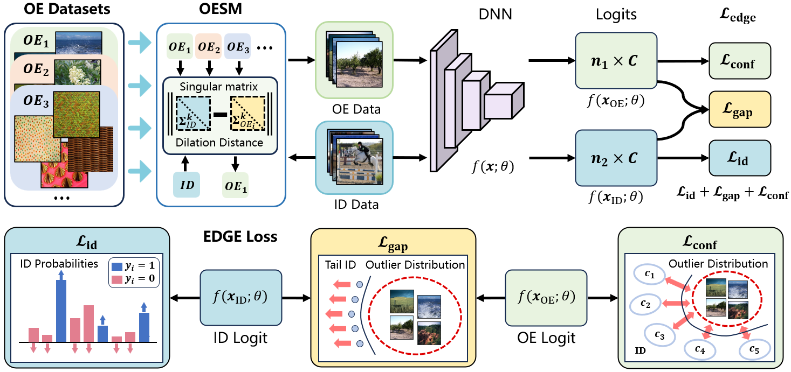
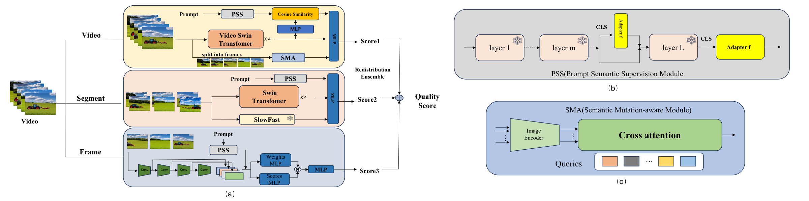
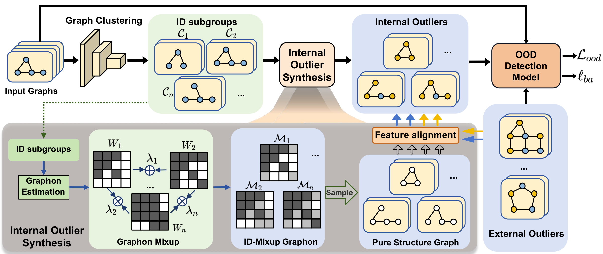
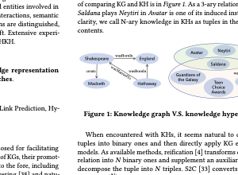
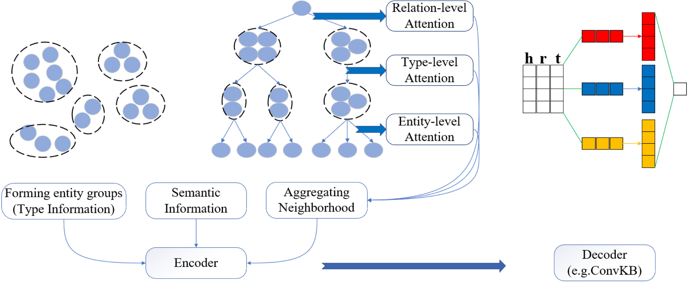

arXiv 2026
T2SPO: Trajectory-to-Step Policy Optimization for Agentic Reinforcement Learning
Turning successful interaction trajectories into step-level credit for training LLM agents.
Agents, reinforcement learning, multimodal evaluation, and graph learning.
* Equal contribution.
Turning successful interaction trajectories into step-level credit for training LLM agents.

Protocol-level rubric aggregation mitigates reward hacking while preserving criterion coverage.

Specializing reward-specific teachers, then merging their capabilities through online policy distillation.

Counterfactual replay assigns token-level credit from rubric feedback without an auxiliary scorer.

A benchmark focused on reusable agent skills and skill-usage behavior across tasks.

An unknown-aware multi-label learning method based on energy distribution separation.

A semantic-aware video quality assessment model for AI-generated video evaluation.

A two-stage graph anomaly detection framework that pretrains graph autoencoders on anomaly-denoised graphs at node, edge, and subgraph levels, then retrains the decoder on the original graph to reduce anomaly overfitting and homophily traps.

A graph OOD detection framework that combines external synthetic exposure and internal graph signals.

A relational hypergraph model for link prediction in n-ary knowledge structures.

A type-aware graph attention model for structured reasoning over knowledge graphs.